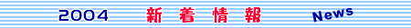
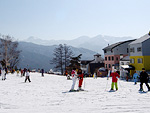
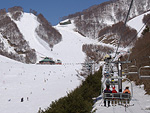
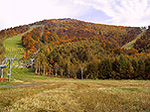
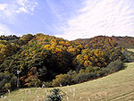
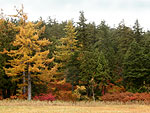
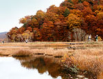
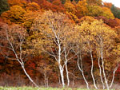
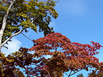
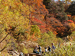

<< back
next>>

■□ 2004 ウインターシーズン予約受付中 □■
今シーズンより
「尾瀬岩鞍スキーリゾート」
の名称が変更になり
「ホワイトワールド尾瀬岩鞍」
として
12月20日（土）グランドオープン
します。
名称変更だけではなく、
スノーボードも全期間滑走可能
となりました。パウダースノーに出会えるのはもうすぐです。皆様のお越しお待ちしております。
★各宿泊パックご用意しておりますので、詳細はお問い合わせください。
nonaka@oze-info.com


2003.10.17
『尾瀬岩鞍スキーリゾート』のゲレンデは美しい紅葉に染まり、静かに冬の訪れを待っています。2004年シーズンの『尾瀬岩鞍スキーリゾート』は、『四季の森・ホワイトワールド岩鞍』に名称を変更し、スノーボード滑走可能となります。
ゲレンデの紅葉 >>


2003.10.12
10/12 撮影の尾瀬ヶ原の様子です。紅葉はピークを迎え、一段と色付いた木々がどこまでも続く様子は、雄大な尾瀬の自然を感じさせます。尾瀬の紅葉は、連休がピークですが、坤六峠や岩鞍高原周辺では、10月後半まで紅葉を楽しめそうです。



2003.10.9
日に日に寒さも増し、尾瀬や岩鞍高原周辺の木々もだんだんと秋色に染まります。「ノナカ」周辺は今秋でいっぱいです。おいしい秋の味覚・温泉、そして紅葉の中を走り抜けるドライブは最高ですよ。
《紅葉情報》
◆ 尾瀬ヶ原・尾瀬沼周辺：木々の紅葉は10/10前後が見頃です。
◆ 岩鞍高原・ノナカ周辺：10/中旬〜11/上旬が見頃です。


<< back
next>>